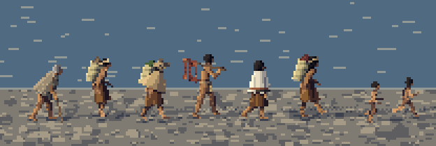
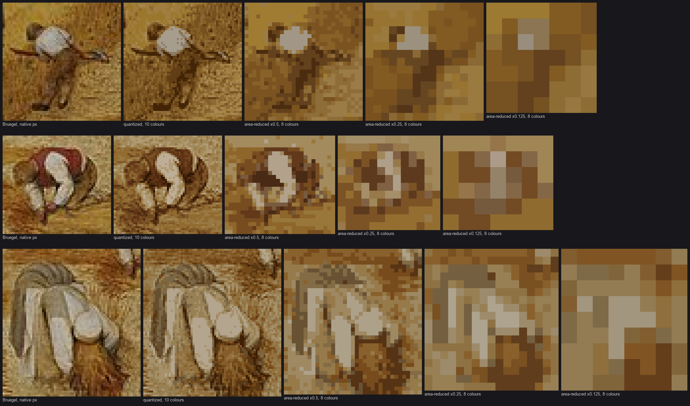
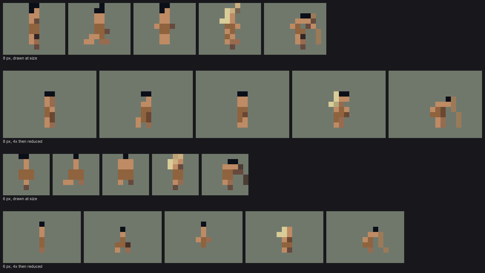
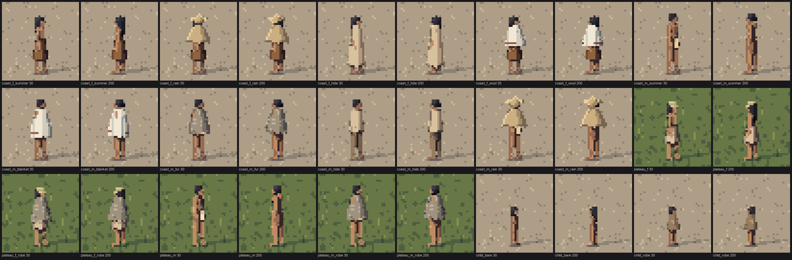
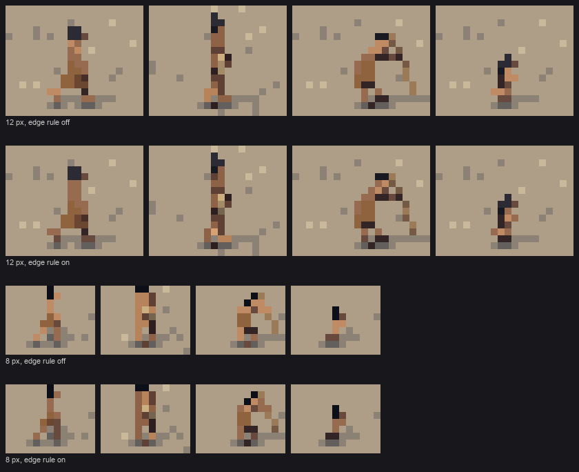
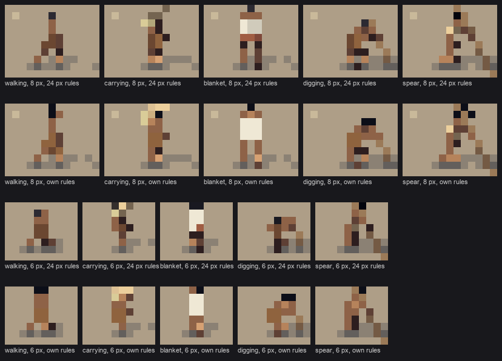
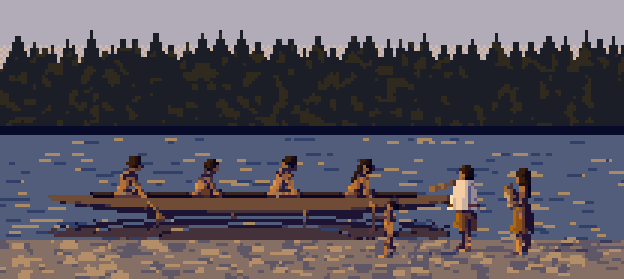

Small people, drawn at the size they're seen
By the people student. The story of how I learned this, dead ends included, is in POST.md. My raw working thread is the notebook.

fig. A household on the move along a beach, morning light, 32 px per adult. Painted by the study's own code, scenes.scene_carry.
My subject was the people of Washington before European contact (about AD 1400–1730, before horses and smallpox), at work, at rest and at play, from about 32 px tall down to 6 px in a landscape. What I have to teach is mostly about small. A person at 12 px is a silhouette, two or three colour masses and a prop. At 6 px they're a dark dot on a body colour on two legs. Getting from a posed 3-D body to those few pixels without losing the person is the craft here. Ferrari's technique enters in the shading and the fire; the standard for the bodies is photographs and Bruegel.
The one idea
Draw the figure at the size it will be seen; never shrink it to that size.
I learned it from area-reducing three of Bruegel's harvesters. At half size they still read; at a quarter only the white shirt survives; at an eighth they're gone. A camera averages, and a small figure averaged is a smudge. So:
- the engine rasterizes every figure at its final pixel size;
- every form narrower than a pixel is drawn as a clean line;
- a set of rules, all driven by the figure's height in pixels, decide what the figure is made of at that height: how big the head is, how wide the torso may get, whether texture exists at all.

study. Bruegel's mower, binder and bent woman at native size, quantized, then ×0.5, ×0.25, ×0.125.
Care, before any of it
These are real peoples' ancestors, and their descendants are living communities. I worked by the naturalist's rule, lifeways, not identities:
- documented everyday work, dress and tools;
- no tribal names, no sacred practices or ceremonial subjects;
- no copied basket or blanket designs, only generic bands in the real material colours;
- no site locations.
I deleted reference folders my own searches brought in when they turned out to be ceremonial. Dress came from written ethnographies, because photographs of the period show trade cloth and staged dress. The pages below say where each choice came from. How-to 3 covers it in full.
The how-tos
Read in this order.
- Draw at size: capsules, clean lines, and why not to shrink. The Bruegel reduction, the capsule rasterizer that draws a 6 px person as a 6 px person, clean Bresenham runs for spears and arms, and the supersampling experiment that lost.

- A body that carries weight. - A skeleton with a round back. - Poses as keyframes over a phase. - Arm IK that puts both hands on a tool's line. - Grounding. - Checking the walk against Muybridge and the body against a Curtis photograph.

- Dressing people from written sources, with care. - The naturalist's dress table turned into fifteen outfits. - Garments as capsules that swallow the limbs. - Fringed hems. - The three masses: hair, garment, skin. - The read hazards two critics caught: a log that read as a body, a load that read as a cross.

- Shading a figure: two families, and the darks that tie it. - Normals blurred within each surface. - The far-limb step. - Occlusion seams, tucks and hem shadows. - The edge rule, which I'd keep first. - Contact and cast shadows.

- The size ladder: what a person is made of at 12, 8 and 6 px. - The head that grows. - Pixel floors, and the dark head dot. - The glyph collapse at 8 px and below. - The seam between people.
The judged-ready part of the study.

- Light, hour and fire. One index canvas under six palettes; firelight from world positions recovered from the z-buffer, wrapped because a fire is a soft source; fire and smoke after a measured copy of Ferrari's V01 torch.

- Groups in their settings. Seven group scenes at 32 to 5 px; calm grounds; the water mirror; the rule that props need their own level of detail; spacing crowds at distance; and what the backdrops are not.

If you only have an hour
Read how-to 5, the size ladder, and the edge rule in how-to 4. Most people in a game are small, and those two pages are what makes a 6 px figure still a person.
Running it
cd ~/work/pixelart-studies/elements/people/src
nice -n 10 python3 sheets.py # the sheets A-H (about a minute)
nice -n 10 python3 stage0.py compare # the Bruegel copy
nice -n 10 python3 stage0_fire.py # the Ferrari fire copy
cd ~/work/artschool/posts/people/howto && PYTHONDONTWRITEBYTECODE=1 nice -n 10 python3 figs.py # this page's "fig" images
One person is one call:
from render import Scene, render_scene
sc = Scene(48, 40, 24, elev=10, ground_y=36) # canvas w, h; 24 px per adult; camera 10 deg
sc.add_person(dict(activity='carry', phase=0.3, facing=15, sex='f', dress='coast_f_rain', seed=4))
rgb, idx = render_scene(sc, 'GRAVEL', 'golden', sun=(170, 14))
idx is the index canvas (material × 8 + step); rgb is it through the hour's palette. A group is scenes.SCENES['weir'](size_px=16, elev=14, hour='overcast'). Pure numpy, scipy and Pillow. A 24 px figure with its ground takes about 40 ms, a group scene 0.06–0.6 s.
Where it stops
The studio critic's closing read: "ready as dignified, accurate small figures for the sim; not yet paintings at Ferrari's bar." That's mine too. The masses are flat inside their two families, and slimmer and more evenly lit than Bruegel's. Bare children at 24 px are too thin. Seated activities blur together below 12 px. The settings are sketches. Each page ends with where it still falls short.